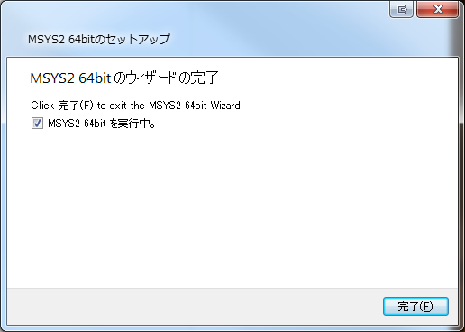

Introduction
TensorFlowのビルドで一躍有名になったビルドシステムBazelをインストールします。
といっても、TensorFlowではなく、別のgoogle製OSSのビルドに使いたいだけです。
Windowsでの導入記事が見つからないので自分でやってみます。
きっと会社で使うことになるでしょうし。
Explanation
まずは公式でWindowsへの導入説明を読みます。
Bazelのインストールは下記の3手法があります。
- バイナリのダウンロード
- Chocolatey
- ソースから自分でビルド
今回はバイナリをダウンロードします。
Downalod
Githubでダウンロードできますので入手します。Releaseページから各自の環境に適合したものをダウンロードします。
2017/12/24現在で最新は0.9.0です。
Let’s install
適当なフォルダに展開するだけです。
そして公式ページでは
We recommend putting the binary in a directory that’s on your %PATH%.
つまり、環境変数PATH上のディレクトリに展開することを推奨します。 とのお達し。
このあたりは好みです。
今回は、C:\Program Files\Google\Bazel\bazel-0.9.0-windows-x86_64.exeに展開しました。
同じフォルダに、Bazel.exeというシンボリックリンクがあるとちょっと幸せな感じがします。
Setup!!
残念なことに、これで終わりではないです。
CMakeとかインストーラーで終わりなのに、何この面倒な感じ。
公式におけるインストール後の指示には、
- Python 2.7またはそれ以降
- msys2
- msys2 パッケージ
- Java JDK 8
が必要だと書いてあります。
げんなりします。
Python
既に私のシステムにはPythonがあるので省略します。
AnacondaなりMinicondaなりでインストールするのが簡単です。
Minicondaでしたら、インストールした際のスクリーンショット付きで記事があります。
msys2
msys2はインストーラーで提供されています。
公式ページからダウンロードでします。
msysはwikiによると、
Windows上で動作するUnixシェル(Bash)やテキスト操作ユーティリティ(gawk, sed, findutil)、ソースコードパッチ用ツール(diffutil), アーカイブツール(tar, bzip2, zlib)を統合したパッケージである。
とのこと。
ようするにPowerShellみたいな別シェルですね(適当)。
注意するのは、インストール先に、
- 非ASCII文字
- 空白
- シンボリックリンク
- ショートパス (恐らく8.3形式のことかと)
を使うな、とありますので指示に従います。面倒だな。


インストール先に使う文字には注意!!



完了!!
{kind=link}
msys2のパッケージ追加
追加のパッケージが必要とのことなので、先ほどインストールしたmsys2を起動します。
スタートメニューからMSYS2 64bitを開きます。
{kind=link}
で、MSYS2 MSYSをクリックします。選択肢が複数あって、「うっ」って思いました。止めて欲しいね。
シェルが起動したら、
1 | pacman -Syuu git curl zip unzip |
と入力します。
{kind=link}
{kind=link}
インストールするか?と聞かれたのでyと入力
が、途中で、

はぁ!?
1 | 警告: terminate MSYS2 without returning to shell and check for updates again |
と出ました。
要約すると、もう一度シェルを立ち上げ直して同じ事をしろ、ってことです。
が、閉じるボタンを押下すると、処理中なのか応答が鈍いですが、

と出るので、OKで停止します。
それでも応答なしとかになったら、タスクマネージャなりAlt+F4で停止させます。鬱陶しい….
で、再起動後、また同じコマンドを入力したら上手くいきました。何の苦行だよ….
結構時間がかかりますので、コーヒー飲むなり風呂に入るなりして時間をつぶします。
Java JDK 8
7でもなく9でもなく、8だそうです。何、この厳密なバージョン指定。
BazelにはJDK8が埋め込まれているそうです。なので、普通に起動できたらOKでしょう。
私は起動できたので、何もしませんでした。
起動
コマンドプロンプトから、bazel.exeを起動します。
1 | $ C:\Program Files\Google\Bazel>bazel.exe |
動いた感じですね。
Conclusion
まぁ、面倒な感じでした。
PythonやJDK8は既にインストール済みだったので、実質msys2のインストールがメインでしたが。